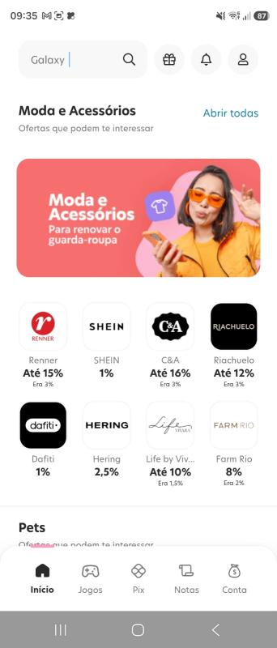
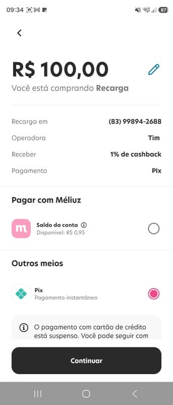
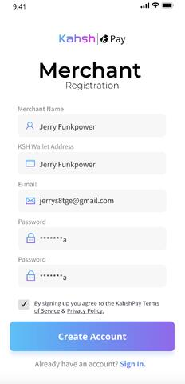
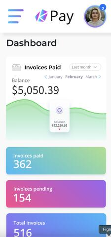
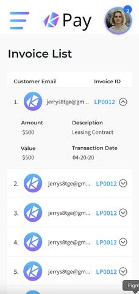

Mobile
React Native · TypeScript · JavaScript · Android · iOS · React Navigation
DESENVOLVEDOR MOBILE SÊNIOR · JOÃO PESSOA, BRASIL
Senior React Native Developer / Mobile Engineer
Arquitetura mobile, qualidade de código e produtos que chegam às mãos das pessoas.
01 / 07
Construindo interfaces e sistemas digitais desde 2013.
02 / 07
SOBRE
+7 anos criando aplicações mobile críticas com React Native, TypeScript e uma atenção obsessiva aos detalhes.
Atuo na interseção entre produto, design e engenharia. Já trabalhei com fintech, energia, logística, governo, saúde e agronegócio — sempre buscando equilibrar arquitetura, performance e uma experiência simples para quem usa.
03 / 07
STACK & MÉTODO
React Native · TypeScript · JavaScript · Android · iOS · React Navigation
Mobile Architecture · REST APIs · Redux · Axios · Firebase · Python
Jest · CI/CD · Git · performance · componentização · troubleshooting
UX/UI · Agile/Scrum · produto · documentação técnica · Design Systems
04 / 07
TRABALHO SELECIONADO
Alguns capítulos da minha trajetória entre desenvolvimento mobile, arquitetura e design de produto.


FINTECH · REACT NATIVE
Atuação no core do app nas verticais de Recargas e Gift Cards, evoluindo jornadas financeiras, componentes reutilizáveis e integrações REST.



PRODUTO · UI DESIGN
Protótipos mobile de alta fidelidade, fluxos de usuário e um Design System criado para dar consistência e velocidade ao produto.
05 / 07
EXPERIÊNCIA
Senior React Native Developer
Aplicação para fiscalização agropecuária, integrações com backend em Python e entregas focadas em performance e qualidade.
Senior Mobile Engineer
Módulos críticos de autoatendimento para energia, busca para matchmaking de fretes e documentação técnica estruturada do zero.
React Native Developer
Desenvolvimento de fluxos financeiros no core do app, com componentes reutilizáveis, Styled Components e APIs REST.
Senior Analyst · React Native
Migração de Ionic para React Native, integrações com Salesforce, Redux, Axios e testes unitários com Jest.
06 / 07
ANTES DO CÓDIGO
Antes de me especializar em mobile, passei por desenvolvimento web, Android, análise de sistemas e liderança técnica no setor público.
Tecnólogo em Sistemas para Internet · Unipê
Tecnologia em Geoprocessamento · IFPB
Soul Crystal · LABTRANSP · aplicações web e mapas interativos
07 / 07
CONTATO
Se o desafio envolve produto digital, mobile e uma boa dose de cuidado, me conte sobre ele.